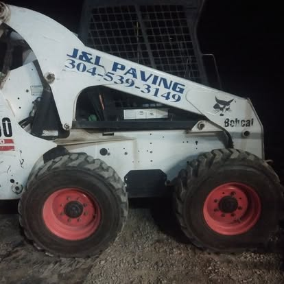

Asphalt driveways, parking lots & resurfacing built to last for homes and businesses.
Grading, drainage, site prep & land clearing — strong foundations start here.
Tree hauling, woods clearing, path building, conservation cleanup, and more.
Gravel, asphalt, dirt & debris delivered or hauled away fast across Central WV.